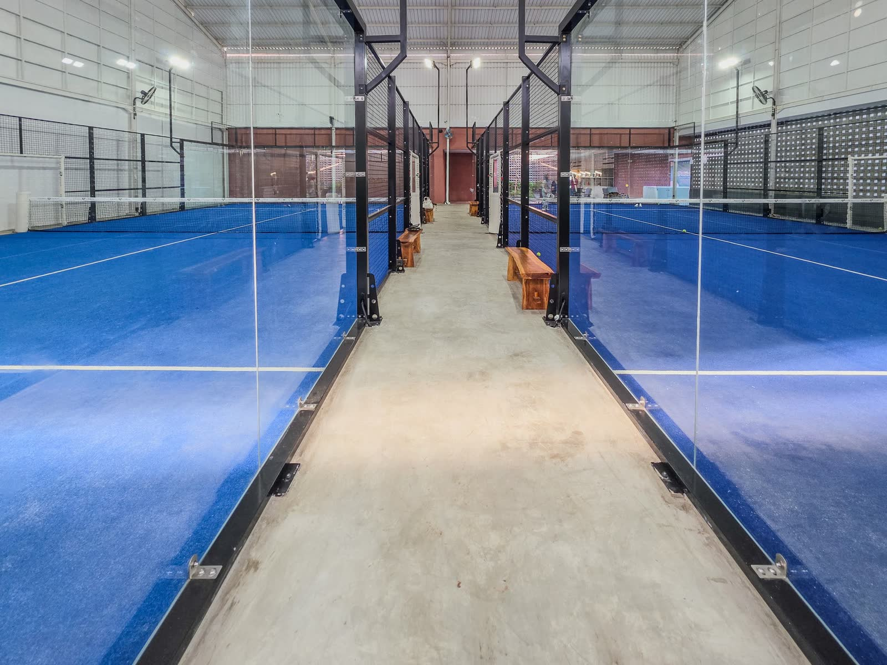

Tennis de table27150
Table bleue en béton coulé
Table de ping-pong d'extérieur tous temps, plateau bleu ou vert.
Marque : Cornilleau (page « Les tables Cornilleau »)Page 140 du catalogueTennis de table (tables Cornilleau et Joola), badminton, speed-ball et squash, tennis et padel : raquettes, balles et volants, poteaux, filets, brise-vent et entretien des courts.

Image d'illustration : N Sopyan, Pexels
Pour un prix, une référence ou une mise en situation, demandez un devis : nous répondons avec une proposition adaptée à votre terrain.
Une sélection tirée de notre catalogue, avec la référence à rappeler dans votre demande de devis. Toute la gamme est dans le Guide Sport 2025, pages 127 à 166.
Table de ping-pong d'extérieur tous temps, plateau bleu ou vert.
Marque : Cornilleau (page « Les tables Cornilleau »)Page 140 du catalogueTable en béton polymère armé de 45 mm, cadre aluminium.
Page 140 du catalogueRaquette de badminton pour enfant, 43 cm.
Marque : VictorPage 143 du cataloguePoteaux et filet pour badminton ou mini-tennis, en salle ou dehors.
Page 150 du cataloguePoteau aluminium carré de 80 mm, hauteur réglementaire, avec fourreau.
Page 151 du catalogueFilet en polypropylène traité UV, câble acier gainé.
Page 160 du catalogueChariot à grandes roues pivotantes, fermeture à cadenas possible.
Page 161 du catalogueNiveleur en aluminium avec lame caoutchouc, 200 cm, pour l'entretien des courts.
Page 163 du catalogueAppelez-nous ou décrivez votre besoin : nous revenons vers vous avec une proposition chiffrée. Délai de réponse [à confirmer].
+32 63 57 80 85